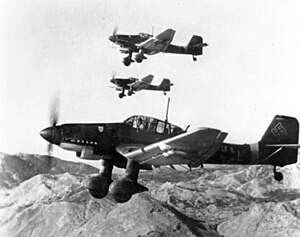

| Spesifikasi | Detail |
|---|---|
| Jenis | Pembom Tukik (Dive Bomber) |
| Awak | 2 orang (Pilot, Penembak Belakang/Operator Radio) |
| Panjang | 11,10 m (Ju 87B) hingga 11,50 m (Ju 87D) |
| Lebar Sayap | 13,80 m |
| Tinggi | 3,90 m |
| Berat Kosong | 2.760 kg (Ju 87B) hingga 3.900 kg (Ju 87D) |
| Berat Lepas Landas Maksimum | 4.300 kg (Ju 87B) hingga 6.600 kg (Ju 87D) |
| Mesin | Junkers Jumo 211 Da atau Jumo 211 J (berbagai sub-tipe) |
| Tenaga Mesin | 1.200 PS (883 kW) hingga 1.410 PS (1.037 kW) |
| Kecepatan Maksimum | 330 km/jam (Ju 87B) hingga 410 km/jam (Ju 87D) |
| Jarak Jelajah | 500 km (Ju 87B) hingga 800 km (Ju 87D) |
| Plafon Terbang | 8.000 m (Ju 87B) hingga 7.900 m (Ju 87D) |
| Persenjataan Depan | 2 x 7,92 mm MG 17 senapan mesin tetap di sayap |
| Persenjataan Belakang | 1 x 7,92 mm MG 15 atau MG 81 senapan mesin fleksibel |
| Bom | Hingga 1.000 kg (biasanya 250 kg atau 500 kg di bawah badan, ditambah bom-bom kecil di sayap) |
| Fitur Khusus | Sirene Jericho-Trompete (terompet Yerikho) pada beberapa varian awal untuk efek psikologis |
| Produksi | Lebih dari 6.500 unit |